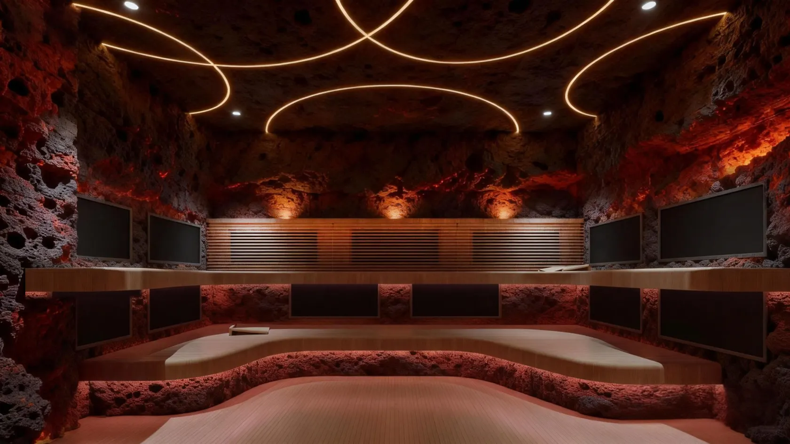

Skip to content
YUANWANG
HOT SPRING DESIGN & ENGINEERING
Menu
About
Solutions
Engineering & design
Geothermal systems
Applications
Technology
Products
All collections
Stainless steel pools
Signature experiences
Water shows
Thermal wellness
Projects
Resources
Resource centre
After-sales & support
International delivery
Partnerships
Discuss a project
↗
← Projects
Arxan Wellness Rooms, Inner Mongolia
Concept renderings
Select an image to view it at full size.

Contact